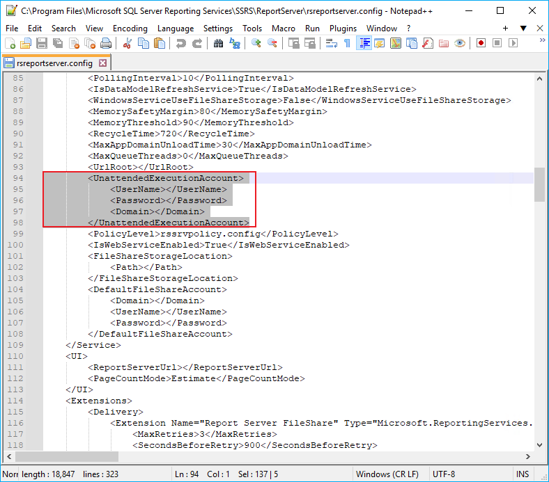

Symptom
The following error occurres when trying to run Netwrix Auditor reports:
The report server has encountered a configuration error.
Logon failed for the unattended execution account. (rsServerConfigurationError)
Log on failed. Ensure the user name and password are correct. (rsLogonFailed)
The user name or password is incorrectCauses
-
Credentials for the execution account used in your Report Server Configuration Manager instance are incorrect.
-
Incorrect credentials for an execution account are saved in the
rsreportserver.configfile and are prompted upon a login.
Resolutions
To verify credentials for an execution account in Report Server Configuration Manager, refer to the following steps:
-
In Start menu in your SQL server, select the Microsoft SQL Server Reporting Services folder > Report Server Configuration Manager.
-
Connect to the server.
-
In the left pane, select the Execution Account tab.
-
Review the credentials provided, and click Apply.
If no credentials are visible in Report Server Configuration Manager, refer to the following steps:
-
Locate the
rsreportserver.configfile. Refer to the following path for SQL Server Reporting Services (2016):C:\Program Files\Microsoft SQL Server\MSRS13.MSSQLSERVER\Reporting Services\ReportServerRefer to the following path for SQL Server Reporting Services (2017 and later):
C:\Program Files\Microsoft SQL Server Reporting Services\SSRS\ReportServer -
Open the
rsreportserver.configfile in a text editor, and locate the<UnattendedExecutionAccount>node. -
Delete the credentials specified in
<UserName>,<Password>, and<Domain>fields.